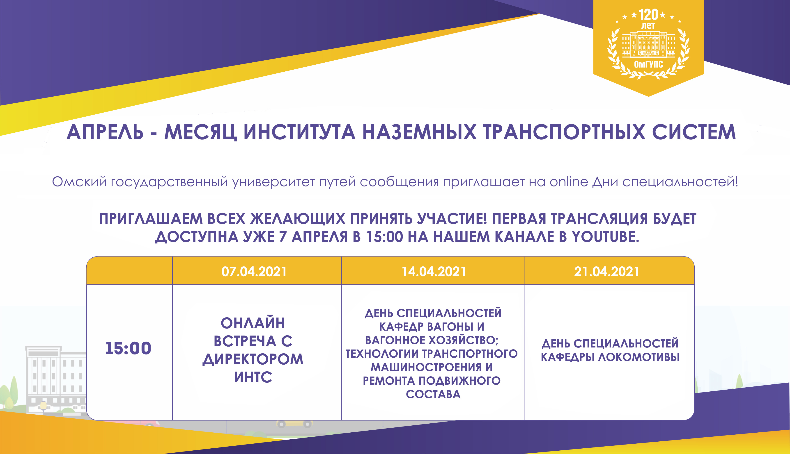
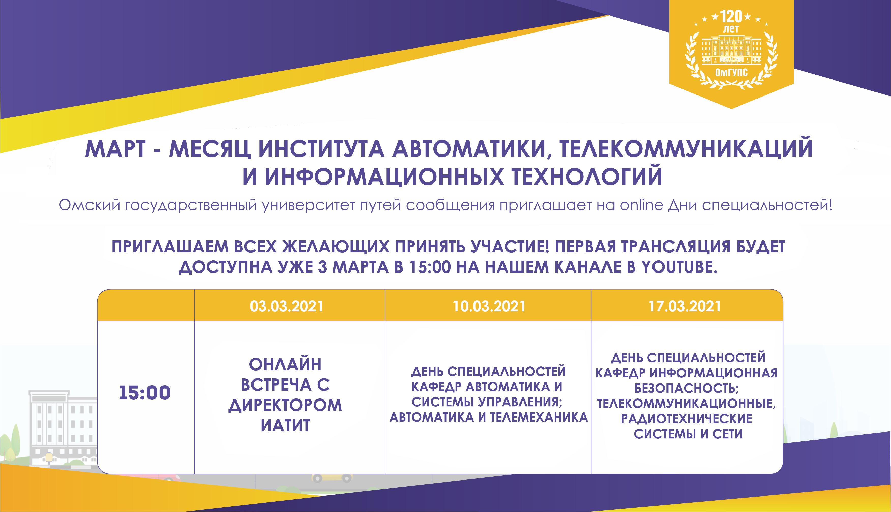
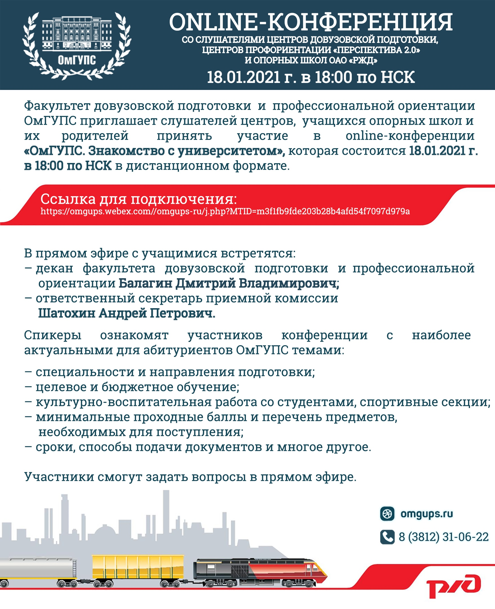
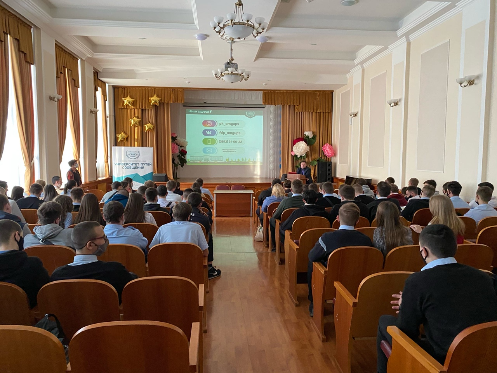
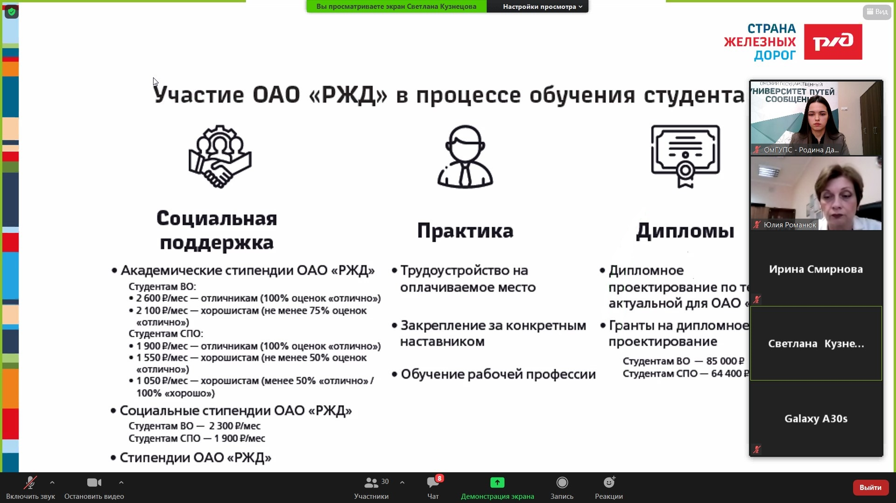
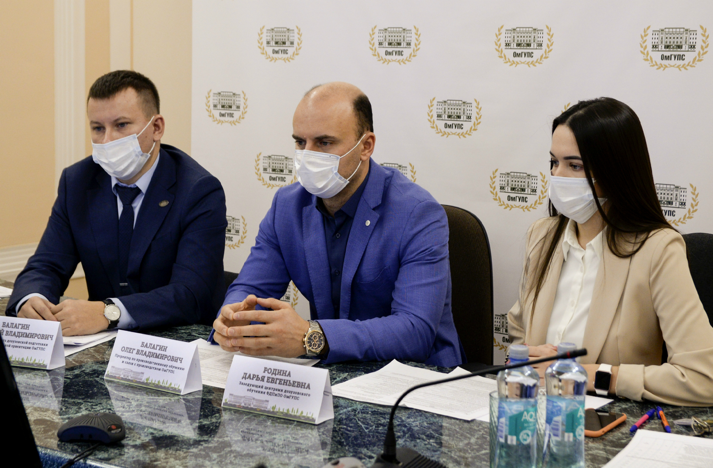
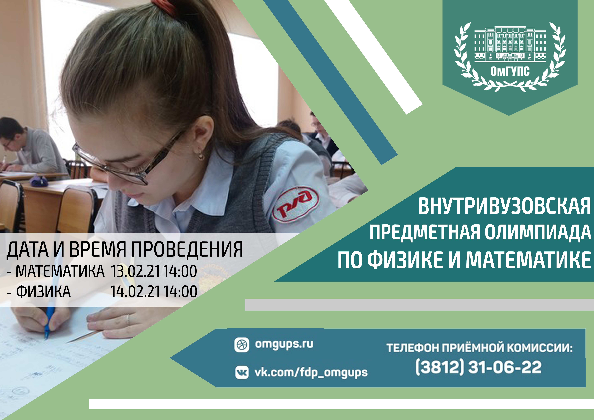
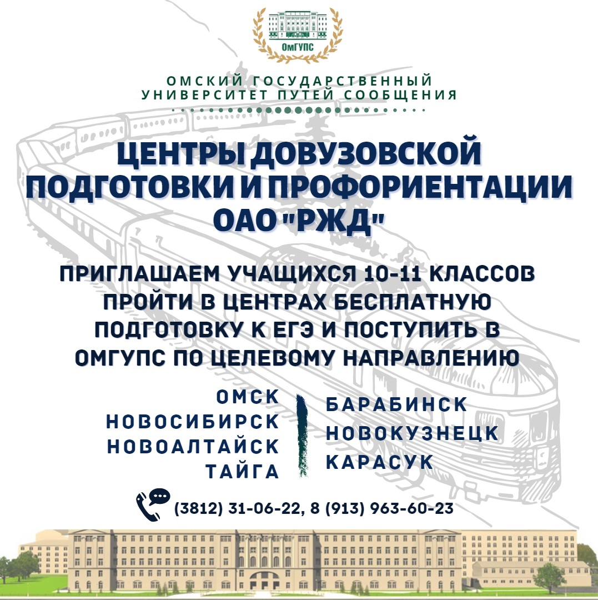
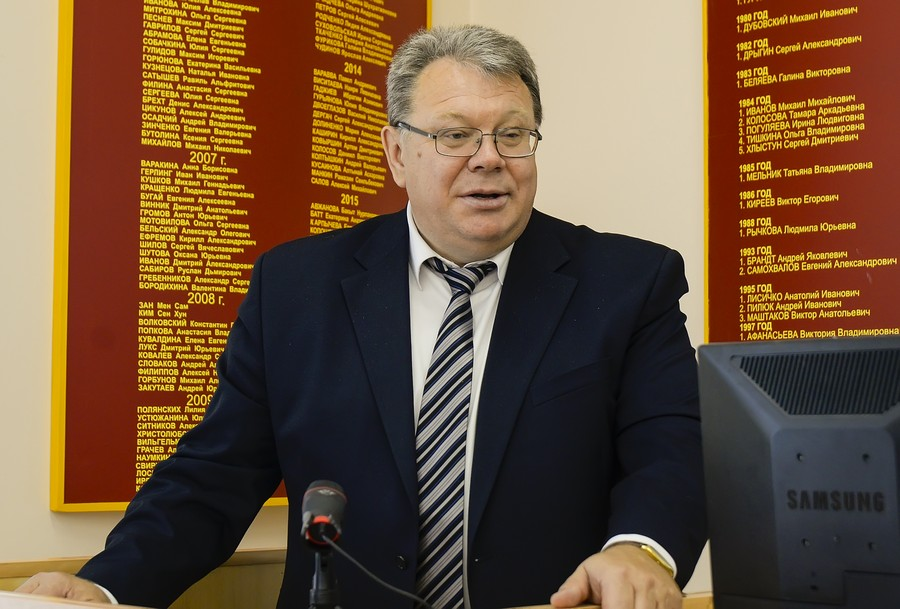
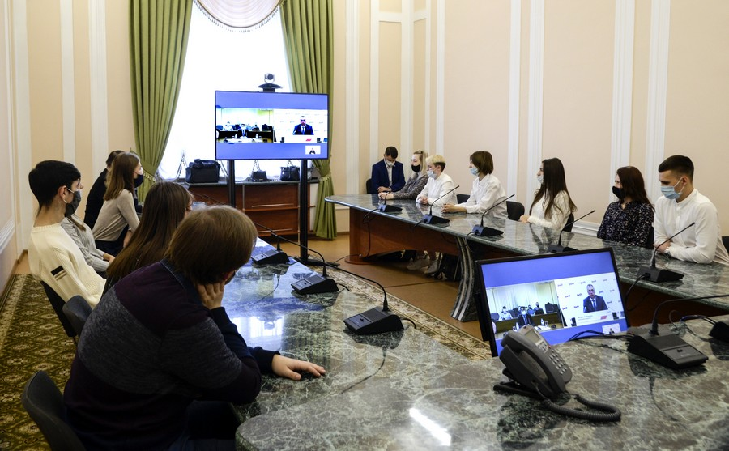

Апрель — месяц института наземных транспортных систем
01.04.2021 г.
ОмГУПС приглашает на online Дни специальностей!
Абитуриенты, родители и все желающие смогут принять участие в online-встречах, во время которых можно будет познакомиться со специальностями и направлениями подготовки института наземных транспортных систем, пообщаться с преподавателями, узнать много интересной информации о специфике обучения, возможностях трудоустройства и траектории карьеры.

Профильная смена на базе Центра одарённых детей Новокузнецка
31.03.2021 г.
С 23 по 25 марта в Центре одарённых детей на базе школы-интерната № 19 ОАО «РЖД» прошла первая профильная смена, участие в которой приняли старшеклассники из пяти регионов Западно-Сибирской магистрали: Кулунды, Белово, Тайги, Барабинска и Омска.

Я – будущий абитуриент-железнодорожник
18.03.2021 г.
С 10 по 13 марта на базе МБОУ «Технический лицей № 176» Карасукского района Новосибирской области прошла профильная смена для старшеклассников «Я – будущий абитуриент-железнодорожник». Участниками смены стали обучающиеся 10 и 11 классов школ Карасукского и Краснозерского районов Новосибирской области, проявившие интерес к дальнейшему обучению в вузах железнодорожного профиля.
В рамках профильной смены школьники работали в инженерно-технологическом центре лицея, занимались в спорткомплексе, прошли профориентационное тестирование, направленное на выявление способностей и профессиональных предрасположенностей, побывали на различных мастер-классах, в рамках экскурсии посетили локомотивное депо Карасук, ознакомились с профессиями, необходимыми на предприятиях железнодорожного транспорта.
На профильной смене ОмГУПС представили:
- декан факультета довузовской подготовки и профессиональной ориентации Дмитрий Владимирович Балагин;
- ответственный секретарь приёмной комиссии Андрей Петрович Шатохин;
- заведующая центрами довузовского обучения Дарья Евгеньевна Родина.

Профильная смена «Перспектива 2.0» в ОмГУПС
10.03.2021 г.
С 3 по 5 марта на базе ОмГУПС прошла профильная смена «Перспектив 2.0» центров профориентации ОАО «РЖД». В течение трёх дней обучающиеся 10–11 классов из Новокузнецка, Карасука и Барабинска погрузились в студенческую жизнь нашего университета.

«Программа профильной смены была интересная и увлекательная. Мне представилась возможность познакомиться с преподавателями, новыми людьми. В ходе мероприятий я получила много новых знаний, узнала историю ОмГУПСа и увидела его со всех сторон. Жили мы в очень хороших условиях. За такой короткий промежуток времени мы получили бесценный опыт, научились делать проектно-исследовательские кейсы и многое другое. Если возникали сложности, нам всегда помогали и объясняли. Было несколько учебных заведений, куда я хотела поступить. Теперь без раздумий могу сказать, что именно в ОмГУПСе хочу учиться. Это мероприятие поспособствовало моему окончательному решению», — поделилась своими впечатлениями участница профильной смены «Перспектива 2.0» Ольга Конопля, город Карасук.
Март — месяц ИАТИТа
26.02.2021 г.
ОмГУПС приглашает на online Дни специальностей!
Абитуриенты, родители и все желающие смогут принять участие в online-встречах, во время которых можно познакомиться со специальностями и направлениями подготовки института автоматики, телекоммуникаций и информационных технологий , пообщаться с преподавателями, узнать много интересной информации о специфике обучения, возможностях трудоустройства и траектории карьеры.
Приглашаем всех желающих принять участие! Первая трансляция будет доступна уже 3 марта в 15:00 на нашем канале YouTube: https://www.youtube.com/channel/UCXgmIKN2fhHkEJMdC-ZGFPA

Объявление
13.01.2021 г.
Онлайн-конференция со слушателями центров довузовской подготовки, центров профориентации "Перспектива 2.0" и опорных школ ОАО "РЖД"

C Новым годом!
13.01.2021 г.
Омский государственный университет путей сообщения поздравляет с наступившим Новым 2021 годом и Рождеством!
Пусть 2021 год станет еще более плодотворным и удачным, наполненным новыми возможностями и перспективами. Желаем крепкого здоровья, счастья и благополучия!
Объявление
15.12.2020 г.
Объявление для слушателей центров довузовской подготовки и профориентации "Перспектива 2.0" г. Новокузнецка, г. Новосибирска, г. Карасука, г. Тайги.
Уважаемые слушатели центров! 20 декабря, в воскресенье, состоится первое занятие по математике. В дальнейшем занятия будут проходить по субботам.
Подробная информация, график занятий и ссылки для подключения расположены на портале дистанционного обучения.
Важно! Менять пароль от личного кабинета на портале запрещено!
Профориентационная работа ОмГУПС в Новосибирске
07.12.2020 г.
Прошли профориентационные мероприятия на базе Новосибирского колледжа транспортных технологий им. Лунина и Новосибирского техникума железнодорожного транспорта — структурного подразделения Сибирского государственного университета путей сообщения
Участники встречи особо отметили преимущества заочной формы обучения с применением дистанционных технологий, что позволяет проходить обучение без отрыва от производства и, в конечном счете, получить высшее профильное образование, которое так необходимо в ОАО «РЖД» на сегодняшний день.

Новогодний День открытых дверей в ОмГУПС
05.12.2020 г.
В первую субботу декабря в Омском государственном университете путей сообщения прошел новогодний День открытых дверей.
У школьников и их родителей была возможность пообщаться с директорами институтов, воочию увидеть все достоинства университета, оценить серьезность подхода к образовательному процессу и дальнейшие возможности личностного роста. В фойе студенческого учебного центра ОмГУПСа представители культурно-образовательного пространства «Мюсли Канта» в формате интеллектуальных игровых площадок рассказали будущим абитуриентам об истории ВУЗа, различных культурных и спортивных мероприятиях, проводимых в ОмГУПСе, секциях и творческих коллективах.

Целевое направление на обучение в ОмГУПС
28.11.2020 г.
В целях формирования у школьников и их родителей представлений о правилах приёма на целевое обучение от ОАО «РЖД» в 2021 году состоялась видеоконференция «Целевое направление на обучение в университетах путей сообщения. Возможности центра довузовской подготовки ОмГУПС».
Участниками конференции стали:
- начальник Детской железной дороги города Новосибирска Юлия Станиславовна Романюк;
- заместитель начальника Детской железной дороги по организации учебного процесса Светлана Андреевна Кузнецова;
- заведующая центрами довузовского обучения факультета довузовской подготовки и профессиональной ориентации Дарья Евгеньевна Родина;
- кураторы выпускных групп, будущие целевики и их родители.

19.11.2020 г.
На Западно-Сибирской железной дороге состоялся форум «Совершенствование профориентационной работы на полигоне ЗСЖД. Лучшие практики» в дистанционном формате.
Целью форума стало обсуждение перспектив довузовской и профориентационной работы с опорными школами ОАО «РЖД», планов по организации работы в рамках центров довузовской подготовки и профориентации на Западно-Сибирской железной дороге, а также выявление путей вовлечения школьников муниципальных образовательных учреждений в железнодорожную отрасль.
Спикерами форума являлись заместитель начальника железной дороги по кадрам и социальным вопросам Александр Михайлович Теслевич, заместитель начальника службы управления персоналом Юлия Викторовна Ноздрякова, представители Омского и Сибирского университетов путей сообщения, директоры опорных школ ОАО «РЖД», руководители центров довузовской подготовки, центров профориентации «Перспектива 2.0» и заместители начальников дирекций по кадрам и социальным вопросам.
От Омского государственного университета путей сообщения на форуме приняли участие:
- проректор по производственному обучению и связи с производством Олег Владимирович Балагин;
- декан факультета довузовской подготовки и профессиональной ориентации Дмитрий Владимирович Балагин;
- заведующая центрами довузовского обучения факультета довузовской подготовки и профессиональной ориентации Дарья Евгеньевна Родина.

26.10.2020 г.
ОмГУПС приглашает школьников 9-11-х классов принять участие во внутривузовской предметной олимпиаде по физике и математике. Участие возможно по одному или по двум предметам.
Олимпиада — это возможность для школьников оценить уровень своих знаний и проверить себя перед сдачей ЕГЭ и ОГЭ. В оценочную комиссию входят ведущие доценты кафедр «Физика и химия» и «Высшая математика» Омского государственного университета путей сообщения.
Даты проведения олимпиад:
Математика 13.02.2021;
Физика 14.02.2021.
Каждому участнику олимпиады будет выдан сертификат.

Набор в центры довузовской подготовки и профориентации ОАО «РЖД»
23.10.2020 г.
ОмГУПС совместно с Западно-Сибирской железной дорогой на протяжении многих лет реализует подготовку будущих целевиков ОАО «РЖД».
На данный момент функционируют центры в семи городах: г. Омск, г. Новосибирск, г. Новоалтайск, г. Тайга, г. Новокузнецк, г. Барабинск, г. Карасук.
В центры еженедельно выезжают преподаватели вуза, имеющие большой опыт подготовки школьников к ЕГЭ. Подготовка осуществляется по базовым предметам, необходимым для поступления на технические специальности и направления подготовки – математика (профильный уровень), физика.
Занятия проходят с декабря по май. Помимо обучения проводятся различные профориентационные мероприятия, форумы, тренинги, игры.
Запись в центры: (3812) 31-06-22, 8 (913) 963-60-23

«Всероссийская Книга почёта»
15.10.2020 г.
Омский государственный университет путей сообщения включён в Федеральный Реестр «Всероссийская Книга Почёта» за 2020 год.
Факт включения организации в Реестр означает признание на уровне органов исполнительной власти её значимости для развития своего региона, подтверждает деловую и общественную репутацию, подчеркивает её статус.
Наш университет традиционно попадает на страницы «Всероссийской Книги Почёта» и отмечается как одно из лучших и достойных учреждений, которое своей работой способствует социально-экономическому развитию не только Омской области, но и России.
Все дороги ведут в ОАО «РЖД»
19.09.2020 г.
В рамках мероприятий, посвящённых дню рождения ОАО «РЖД» в Омском государственном университете сообщения состоялась лекция заместителя начальника службы вагонного хозяйства Западно-Сибирской дирекции инфраструктуры — филиала ОАО «РЖД» Сергея Васильевича Киселева, который выступил с презентацией «Структура вагонного хозяйства на Западно-Сибирской железной дороге». Обсуждались темы инноваций в вагоностроении, расширения и совершенствования автоматизированного приёма и диагностики подвижного состава, повышения эффективности деятельности вагонного комплекса. Помимо этого, Сергей Васильевич поделился с будущими коллегами плюсами работы в Западно-Сибирской дирекции инфраструктуры.

ОмГУПС принял участие в «Диктанте Победы»
11.09.2020 г.
В ОмГУПСе на специально организованной площадке состоялась всероссийская акция «Диктант Победы». Результаты «Диктанта Победы» доступны на сайте диктантпобеды.рф.
День компании ОАО «РЖД»
10.09.2020 г.
В пятницу, 9 октября, в Омском государственном университете путей сообщения прошли мероприятия, посвященные дню компании ОАО «РЖД».
В связи со сложной эпидемиологической обстановкой, впервые, мероприятие прошло в дистанционном режиме. Телемост между управлением Западно-Сибирской железной дороги, ОмГУПСом и СГУПСом открыл начальник Западно-Сибирской железной дороги Александр Валерьевич Грицай. В университетских студиях присутствовали ректоры университетов вместе со студентами-целевиками ОАО «РЖД» и активистами.
«Первого октября компания отметила своё 17-летие. Постоянное движение вперёд, основанное на применении современных технологий и преемственности традиций, позволяет холдингу быть в тройке лидеров мировой железнодорожной отрасли. Ему нет равных в вопросах безопасности движения, эффективности и защите окружающей среды. Это оценка Международного союза железных дорог. В свою очередь Западно-Сибирская магистраль занимает достойное место в компании», — рассказал студентам Александр Валерьевич Грицай.

Личный кабинет
04.09.2020 г.
Внимание!
Для каждого слушателя центра создан личный кабинет на портале дистанционного обучения ОмГУПС. В личном кабинете размещены материалы для подготовки к ЕГЭ, видеокурс "Основы корпоративной культуры ОАО "РЖД", портфолио, результаты научной деятельности слушателей, психотренинг на ориентацию слушателей целевого направления в цифровом образовательном пространстве и многое другое.
Логин и пароль от кабинета необходимо получить у куратора центра в Вашем городе.
День знаний
01.09.2020 г.
ОмГУПС поздравляет с Днём знаний и началом 2020-21 учебного года!
Наступающий учебный год открывает перед вами новые перспективы развития. Хорошее образование - важнейшая составляющая жизненного успеха. Вас ждет чудесный, увлекательный путь! Не упускайте драгоценного времени, вдумчиво и серьезно относитесь к учебе, развивайте свои творческие способности.
Успешное будущее страны зависит от того, какие знания, умения и навыки получат студенты, какими компетенциями они овладеют, с какими профессиональными качествами выйдут из вуза. А это значит, что будущее России в ваших руках.
Дорогие друзья, желаем вам успехов в учёбе! Пусть новый учебный год принесёт радость открытий, будет интересным и плодотворным!

Новостная лента
23.08.2020 г.
Данное приложение разработано Омским государственным университетом путей сообщения для слушателей
Центров довузовской подготовки и профориентации ОАО "РЖД".
В новостной ленте будут отображаться:
- объявления для абитуриентов, обучающихся в центрах
- информация о мероприятиях, проводимых университетом
- главные события ОмГУПС